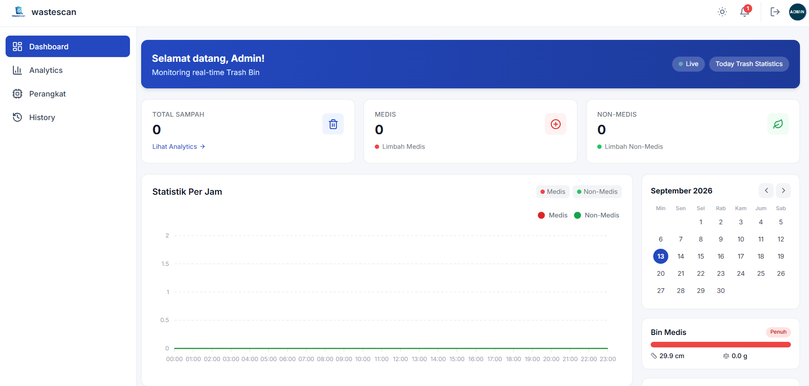

Wastescan — IoT
Aplikasi berbasis web yang membantu pengguna mengidentifikasi jenis sampah Medis dan Nonmedis yang masuk ke bak sampah buatan secara real-time guna mendukung pengelolaan daur ulang lingkungan yang lebih efisien dan terstruktur.
Flask
Python
MySQL
Tensorflow
Raspberry pi